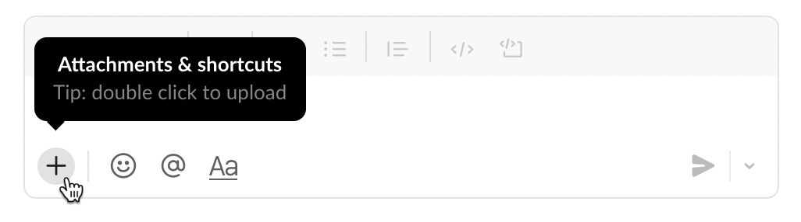
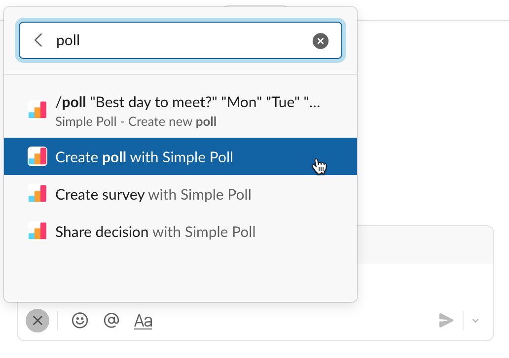

Simple Poll makes it quick and easy to create recurring polls in Slack. There are a couple of ways to do so, so let's start with the easiest.
To create a new recurring poll, access the Simple Poll shortcut as you would when creating a regular poll with Simple Poll. Click the Attachments and shortcuts button in Slack. It's the little plus symbol in the bottom left of the chat window.
If Create poll with Simple Poll is not in the list already, you can search for it by typing "poll":
After selecting the shortcut for Create poll with Simple Poll, a modal window that lets you create your poll will open. In the modal window, fill in the details of your poll and apply any Settings you want. Finally, to make the poll recurring, click the Schedule button.